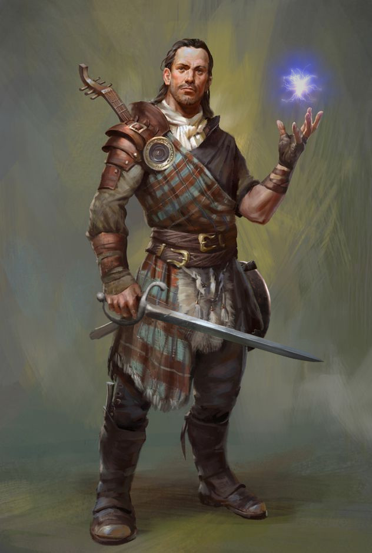

Created Samstag 06 August 2022

Notes
- glaubt an St. Cuthbert
Zusammenfassung
- 22 Jahre
- adelige Abstammung, Ausbildung an Waffen, Geschichte, Musik
- seit 17 besserer Vagabund, der bardische und arkane Fähigkeiten aufgeschnappt hat
- Familie:
- Vater Baron Oberd (53)
- Mutter Ahmonara (48)
- Bruder Kalun (29), Erbe, lebt in Blackwall Keep
- Schwester Kiera (27), von zuhause abgehauen
- Schwester Rimara (26), verheiratet zu minor noble in High Ery
- Bruder Xerin (24), Priester des TODO in Greyhawk City
- Bekannte:
- Balinos Narst (23), Jugendfreund, Bauernsohn, eher fett, Glatze, gemütlich
- Robast Larkt (21), Jugendfreund, Bauernsohn, rothaariger Muskelprotz, leicht aufbrausend
- Pelorakard Erachen (ca. 60), Arcanist, Flanese, Brasken hat als Guard/Bediensteter auf Reisen gearbeitet
- Suelar Ospren, Suloise, fahrender Barde, von Brasken vor Banditen gerettet, hat ihm bardische Künste gelehrt
- Cor Evar, ehemaliger Chefkoch in Blackwall Keep
- Ranald Haradrith, Anführerer der Cairn Hills Militia in Blackwall Keep (der kommt aus dem Wiki)
Familiengeschichte
- Oeridan Abstammung, aber ziemlich gemischt wie alle in Central Flanaess
- so ca. 50 CY Silbermine in den südlichen Cairn Hills gefunden
- ziemlich schnell reich geworden, danach Baron-Würden für die Familie Serrandarn im Great Kingdom of Aerdy und Kontrolle über die Länder nördlich des Mistmarsh
- so 150 CY erstes Blackwall Keep gebaut, Familie lebt seit dem dort
- die Silbermine versiegt ca. 400 CY und viele Leute ziehen weg
- Land ist dort ziemlich steinig, wirft nicht viel ab, keine Bodenschätze mehr -> Bevölkerung wird arm, zieht ab -> Herscherfamilie wird arm
- 451 CY wird Blackwall Keep verlassen, Familie Serrandarn zieht in ein ärmliches (für Baronenverhältnisse) Manorhaus im angrenzenden Hamlet
- 583-584 CY kommen Lizardfolk aus dem Mistmarsh und greifen Farmen an
- Greyhawk schickt Gelder für den Wiederaufbau des Blackwall Keeps, Familie zieht da auch wieder ein
- die Lizardfolk verschwinden aber ziemlich schnell wieder und die Gelder aus Greyhawk versiegen
- Baron Serrandarn will das gerade erst reparierte Keep nicht aufgeben, aber es fällt trotzdem immer mehr in disrepair, weil zu wenig Steuern für den Erhalt da sind
Familie
- Ex-Baron Darranwerd Serrandarn
- Großvater von Brasken
- gestorben in Lizardfolk-Raid 583 CY
- Ex-Baroness Ryshe Serrandarn
- Großmutter von Brasken
- gestorben bei Geburt von Oberd
- Baron Oberd Serrandarn (geb. 542 CY)
- Vater von Brasken
- stolz, streng, pflichtbewusst, findet jeder muss seinen eigenen Weg finden
- Baroness Ahmonara Serrandarn (geb. Lakartai, 547 CY)
- ursprünglich aus reicher Händlerfamilie aus High Ery, haben in arme Baronenfamilie eingeheiratet als social climbing - aber Mitgift war der Familie Serrandarn willkommen, war zur Zeit der Lizardfolk-Raids
- Mutter von Brasken
- vermisst den relativen Luxus von High Ery, kommt aber trotz Zweckehe gut mit Oberd aus
- will den Kindern gute Erziehung geben
- eher unterwürfig, widerspricht Oberd in der Öffentlichkeit nicht, aber privat setzt sie sich oft durch
- Kinder:
- Kalun (geb. 566 CY)
- ältester Sohn, wird als Nachfolger des Barons herangezogen, viele Erwartungen, die er auch erfüllt;
- eher uninteressiert an Geschwistern
- Kiera (geb. 568 CY)
- sehr abenteuerlustig, hat bei der Ausbildung von Kalun immer mitgemacht und war gut in Schwertkampf/Reiten/usw.
- hätte 587 CY eigentlich nach Fort Gellner verheiratet sollen werden, hat sich nach monatelangem Streit aber widersetzt und ist abgehauen - seit dem weiß man nix mehr von ihr
- Rimara (geb. 569 CY)
- eher schüchtern und zurückhaltend, aber sehr intelligent und gute Sängerin
- verheiratet 587 CY nach High Ery, dort ziemlich glücklich als Frau eines niederen Adeligen
- Xerin (geb. 571 CY)
- ähnlich wie Rimara, war immer schlecht in körperlichen Dingen, aber sehr wissbegierig
- ist dann 585 GY von Oberd zur geistlichen Ausbildung nach Greyhawk geschickt worden, nachdem er in seinen Augen in den Lizardfolk-Raids "versagt" hat - als 13 Jähriger
- Priester im Tempel des TODO geworden
- Kalun (geb. 566 CY)
Brasken
- geboren 573 CY
- nie so recht mit Kalun ausgekommen, wollte ihm aber in allem nacheifern
- hat deshalb auch ziemlich zu Kiera aufgeschaut, weil die auch gut in den "maskulinen" Dingen war; hat als Kind nicht verstanden wieso Kiera nicht den Typen in Fort Gellner heiraten wollte, sieht die Dinge inzwischen aber ein bissl anders...
- mag Xerin, aber es gab wenig Interessensüberschneidung zwischen den beiden - außer Geschichten und Legenden von großen Helden
- hat gutes Verhältnis zu Rimara, vor allem über Musik; er spielend, sie singend
- von den Eltern etwas vernachlässigt worden, weil es während seiner Kindheit mit dem Neuaufbau des Keeps, der Lizardfolk-Raids und der Situation mit Kiera ziemlich rund gegangen ist
- Jugendfreunde Balinos Narst, Robast Larkt, etwa im gleichen Alter, Söhne von Bauern, sind jetzt dort auf den Höfen
- war bis 590 CY im heimatlichen Keep, aber ohne Kiera, Rimara und Xerin war ihm bissl langweilig; Kalun immer beschäftigt
- hat wenig Perspektiven gesehen und ist dann mit dem Segen des Vaters losgezogen um sein Glück in der Welt zu machen
- Ausbildung an allen möglichen Waffen, aber keine praktische Kriegserfahrung (war zu jung während der Lizardfolk-Raids)
- spielt mehrere Instrumente (Laute, Flöte, Panflöte)
- hat in den letzten Jahren als alles mögliches gearbeitet und ist in der Gegend herumgekommen
- hat als Guard für einen Arcanisten (Pelorakard Erachen - Flanese, ca. 60) gearbeitet und den auf Reisen begleitet, hat dabei ein gewissen Talent für einfache Magie entdeckt
- später dann auf einen fahrenden Barden (Suelar Ospren, Suloise) getroffen, der ihn als Dank für eine Rettung vor Banditen in die Künste der Barden eingeführt hat
Hook
- trifft alten alten Bekannten Cor Evar zufällig auf der Straße
- der war zwischen 583 bis 587 Chefkoch im Blackwall Keep
- der ist in Diamond Lake aufgewachsen, hat damals als Kind schon in der alten Hütte gespielt und als Mutprobe ins alte Hügelgrab gegangen